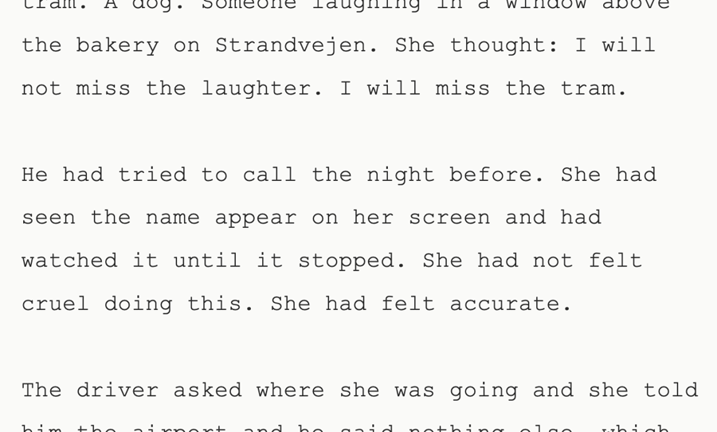
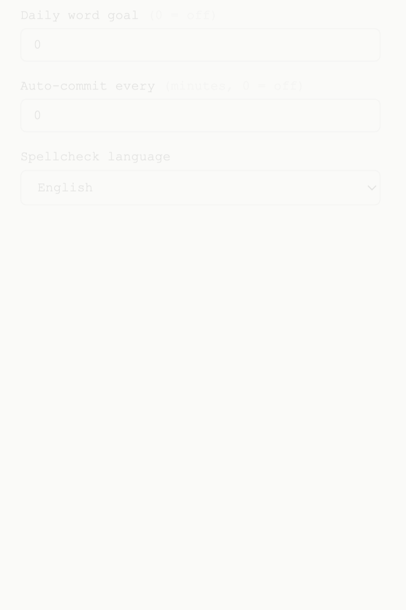
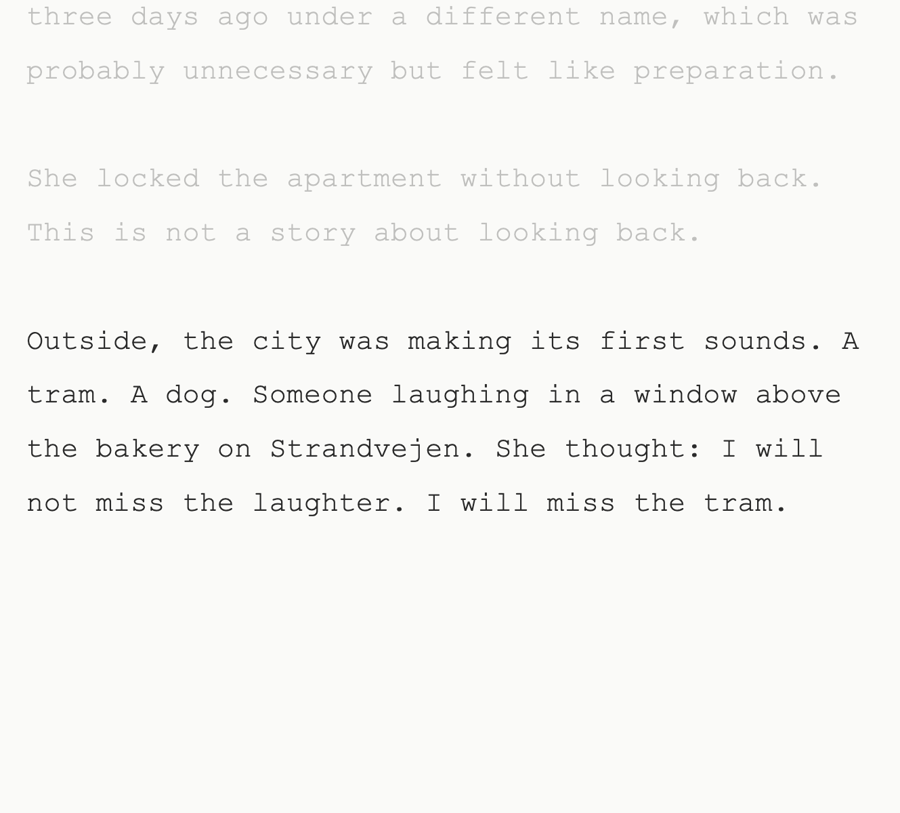
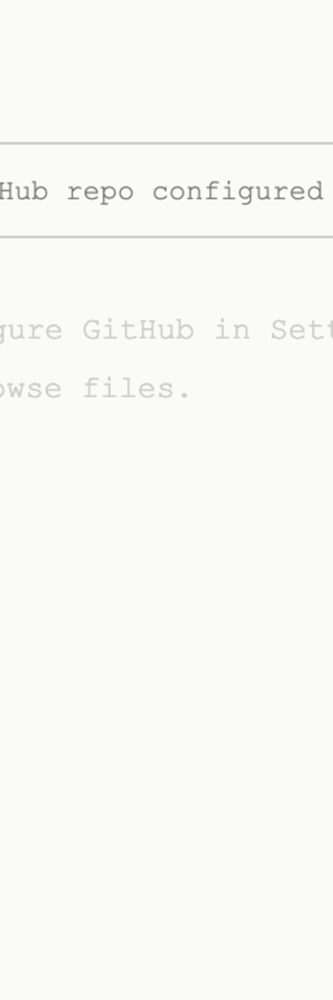
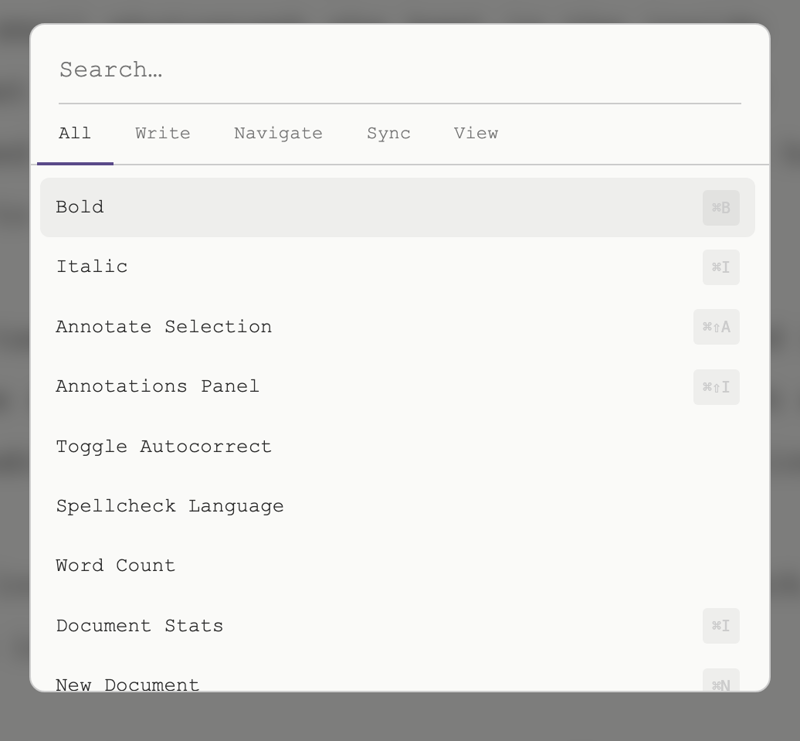
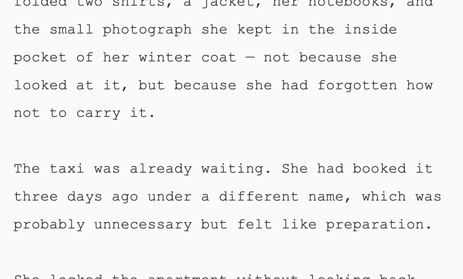

A minimal markdown editor with GitHub sync, AI annotations, eight themes, and a command palette. No account, no tracking.

Every feature serves the writing. Nothing decorative, nothing in the way.
Write in plain Markdown. Preview renders inline. No toolbar, no clutter.
Paper, sepia, dark, midnight, forest, ember, ice. One click, any hour.
Every action one keystroke away. Keyboard-first, always instant.
Save directly to any repo. Versioned, backed up, always yours.
Inline reviews and suggestions. Bring your own key — nothing leaves your browser.
Everything stripped away. Just you, the text, and the cursor.
Eight carefully crafted themes. Paper, sepia, dark, midnight, forest, ember, ice. One click to switch — your preference saved instantly.

Dim everything above and below your active paragraph. The cursor becomes the only focal point. Distractions vanish.

Every panel appears when called, vanishes when dismissed. The writing stays.
Browse, switch, and organize files in the left panel. Every document synced to GitHub. Nothing gets lost.
Highlight any passage. Get an AI annotation — style, structure, argument, overall read. Bring your own API key.

Open files, switch themes, toggle focus, change font size, run any command. Searchable, instant, keyboard-first.

Font size, line height, serif or sans. UI density, dark mode toggle, GitHub sync settings. Every preference persists.
